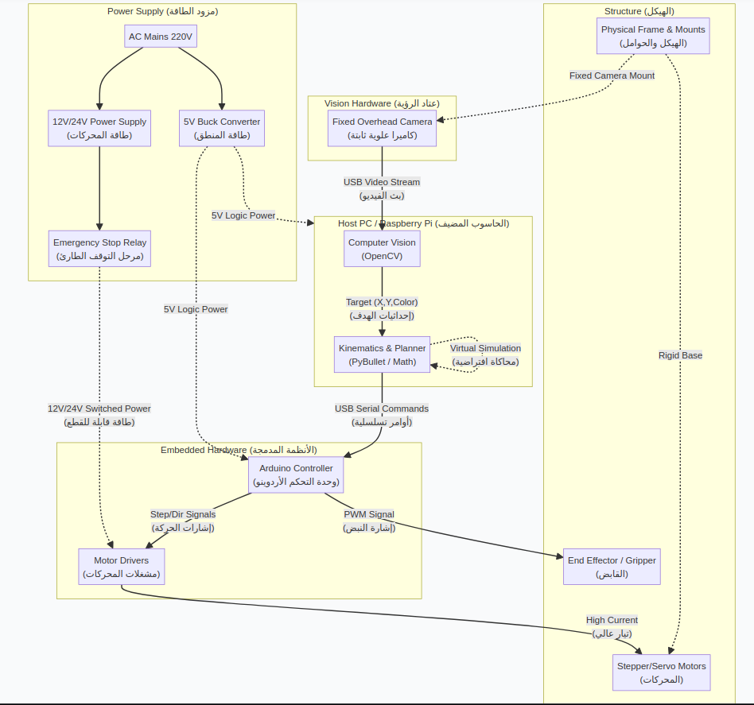

Technical Data Flow (التدفق التقني للبيانات)
Shows how data, signals, and power flow between the 5 main subsystems.
graph TD
%% Host PC
subgraph Host["Host PC / Raspberry Pi (الحاسوب المضيف)"]
OpenCV["Computer Vision\n(OpenCV)"]
Planner["Kinematics & Planner\n(PyBullet / Math)"]
OpenCV --"Target (X,Y,Color)\n(إحداثيات الهدف)"--> Planner
end
%% Power Subsystem
subgraph Power["Power Supply (مزود الطاقة)"]
AC["AC Mains 220V"] --> PS12V["12V/24V Power Supply\n(طاقة المحركات)"]
AC --> PS5V["5V Buck Converter\n(طاقة المنطق)"]
E_Stop["Emergency Stop Relay\n(مرحل التوقف الطارئ)"]
PS12V --> E_Stop
end
%% Vision Subsystem
subgraph Vision["Vision Hardware (عتاد الرؤية)"]
Cam["Fixed Overhead Camera\n(كاميرا علوية ثابتة)"]
end
%% Embedded Subsystem
subgraph Embedded["Embedded Hardware (الأنظمة المدمجة)"]
Arduino["Arduino Controller\n(وحدة التحكم الأردوينو)"]
Drivers["Motor Drivers\n(مشغلات المحركات)"]
Arduino --"Step/Dir Signals\n(إشارات الحركة)"--> Drivers
end
%% Structure Subsystem
subgraph Structure["Structure (الهيكل)"]
Motors["Stepper/Servo Motors\n(المحركات)"]
Gripper["End Effector / Gripper\n(القابض)"]
Frame["Physical Frame & Mounts\n(الهيكل والحوامل)"]
end
%% Inter-System Data Connections
Cam -->|"USB Video Stream
(بث الفيديو)"| OpenCV
Planner -->|"USB Serial Commands
(أوامر تسلسلية)"| Arduino
Planner -.->|"Virtual Simulation
(محاكاة افتراضية)"| Planner
Drivers -->|"High Current
(تيار عالي)"| Motors
Arduino -->|"PWM Signal
(إشارة النبض)"| Gripper
%% Power Connections
PS5V -.->|"5V Logic Power"| Host
PS5V -.->|"5V Logic Power"| Arduino
E_Stop -.->|"12V/24V Switched Power
(طاقة قابلة للقطع)"| Drivers
%% Physical Constraints
Frame -.->|"Fixed Camera Mount"| Cam
Frame -.->|"Rigid Base"| Motors
High-Level Architecture (البنية المعمارية العامة)

Degrees of Freedom (DOF) Analysis
Detailed breakdown of each joint's movement, culminating in a full integration sequence.
DOF 1: Base Yaw (القاعدة)
The foundation of the arm. It rotates horizontally (pan) to aim the entire arm structure towards different coordinates in the workspace, allowing it to reach the various colored sorting bins.
DOF 2: Shoulder Pitch (الكتف)
Lifts and lowers the entire arm. This is the primary joint for vertical reach, requiring the highest torque from the power supply to overcome gravity and lift the payload.
DOF 3: Elbow Pitch (الكوع)
Extends and retracts the forearm independently of the shoulder. Works dynamically together with the shoulder to position the end-effector at specific (X,Y) coordinates calculated by Inverse Kinematics.
DOF 4: Wrist & Gripper (الرسغ والقابض)
The wrist joint pitches to keep the payload level with the ground, while the servo-actuated gripper opens and closes to physically grasp and release the sorted objects.
Pick & Place Sequence (عملية التقاط ووضع كاملة)
This sequence demonstrates all 4 degrees of freedom working together seamlessly. Watch how the side view kinematics perfectly touch the object, lift it, and the top view base yaw rotates to place it in the target bin.